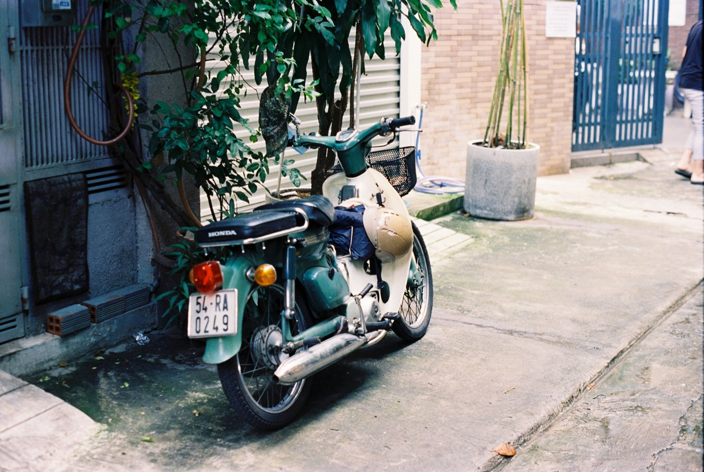

오토바이 시트 아래 챙길 것

스쿠터 수납함은 금세 아무 물건으로 채워집니다. 비를 막고 시트 닫힘을 방해하지 않는 작은 고정 키트를 만드는 것이 훨씬 유용합니다. 정비소를 대신하진 않지만 도로에서 일상적인 상황을 차분히 해결하게 도와줍니다.
기본 일상 키트
- 별도 봉투에 넣은 가벼운 우비;
- 작은 구급상자와 개인 약;
- 물티슈, 손 소독제, 작은 물병;
- 충전 케이블과 작은 보조배터리;
- 갑작스러운 장보기용 고무 끈이나 그물;
- 휴대폰에 저장한 정비소와 주차장 연락처.
모든 물건은 밀봉 봉투 두 개로 나누는 게 좋습니다: 하나는 전자기기와 서류, 다른 하나는 더럽거나 젖은 물건용.
무겁지 않은 공구
도심용 스쿠터라면 기본 공구, 작은 손전등, 케이블 타이 몇 개, 장갑이면 충분합니다. 쓸 줄 안다면 튜브리스 타이어 임시 수리 키트와 펌프를 더해도 됩니다. 하지만 경험 없이 도로변에서 위험한 작업을 하거나 분해하는 것은 좋지 않습니다.

서류와 키
예비 키를 시트 아래 두지 마세요: 수납함을 연 사람은 바로 오토바이까지 얻게 됩니다. 서류 원본은 여행 상황에 맞게 챙기고, 보호된 사본은 휴대폰에 두세요. 닫힌 수납함에도 습기가 들어가니 서류는 밀봉 커버에 넣으세요.
계속 두면 안 되는 것
- 현금, 은행 카드, 여권;
- 휴대폰, 카메라, 비싼 이어폰;
- 더위 속 스프레이 캔과 라이터;
- 상하거나 벌레를 부르는 음식;
- 고정되지 않은 무거운 공구;
- 휘발유와 기타 인화성 액체.
월 1회 점검
키트를 모두 꺼내 수납함을 말리고, 구급상자 유효기간과 보조배터리 충전을 확인하세요. 시트 잠금이 누르지 않아도 닫히는지 보세요. 덮개를 눌러야 한다면 너무 많은 것입니다: 과적된 수납함은 잠금장치나 배선을 망가뜨릴 수 있습니다.
교외 나들이라면
물, 자외선 차단제, 오프라인 지도, 완충된 휴대폰, 목적지 연락처를 더하세요. 가까운 사람에게 경로와 대략적인 귀가 시간을 알리세요. 키트는 거리, 날씨, 도로 상태에 맞아야 합니다.
짧은 결론
가장 좋은 키트는 가볍고, 건조하고, 주인이 정말 잘 아는 키트입니다. 비를 피하고, 휴대폰을 충전하고, 장본 짐을 고정하는 데 도움이 되지만 수납함을 정비소로 만들지는 않습니다. 짐을 안전하게 싣는 법은 오토바이로 짐 싣기에, 고장에 대비해 고장 났을 때 대처법을 저장해 두세요.